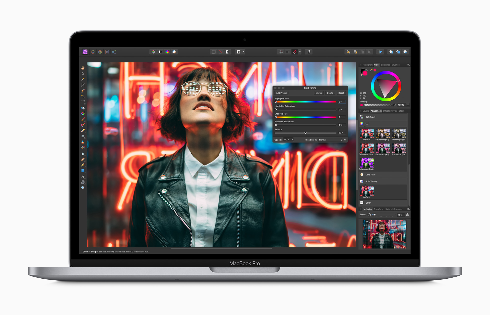
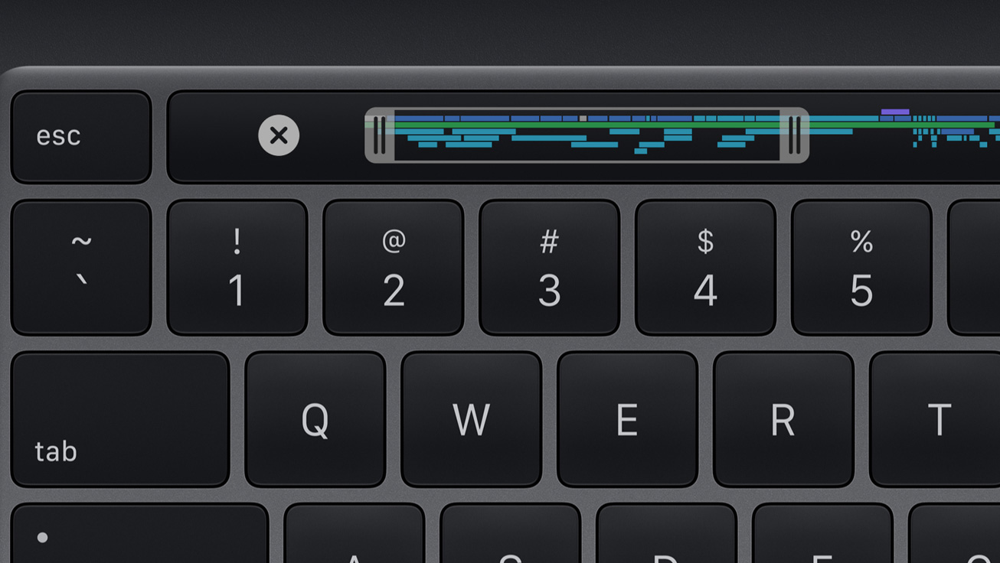

Press Release
May 4, 2020
Apple updates 13-inch MacBook Pro with Magic Keyboard, double the storage, and faster performance

Introducing the 13-inch MacBook Pro updated with the new Magic
Keyboard, double the storage, and faster graphics performance.
Cupertino, California — Apple today updated the 13-inch
MacBook Pro
with the new Magic Keyboard for the best typing experience ever on a
Mac notebook and doubled the storage across all standard
configurations, delivering even more value to the most popular
MacBook Pro. The new lineup also offers 10th-generation processors
for up to 80 percent faster graphics performance1 and
makes 16GB of faster 3733MHz memory standard on select
configurations. With powerful quad-core processors, the brilliant
13-inch Retina display, Touch Bar and Touch ID, immersive stereo
speakers, all-day battery life, and the power of macOS, all in an
incredibly portable design, the new 13-inch MacBook Pro is available
to order today, starting at $1,299, and $1,199 for education.2

With a sleek aluminum unibody design in space gray or silver and
weighing just 3 pounds, the 13-inch MacBook Pro is highly portable
and packed with performance and advanced technologies.
“Whether you’re a college student, a developer, or a creative pro,
the 13-inch MacBook Pro delivers powerful performance, a stunning
Retina display, and all-day battery life in our most portable pro
notebook. Today we’re adding the new Magic Keyboard, doubling the
standard storage, and boosting performance, making the 13-inch
MacBook Pro an even better value for our customers,” said Tom Boger,
Apple’s senior director of Mac and iPad Product Marketing. “With
these updates, our entire notebook lineup features the Magic
Keyboard for the best typing experience ever on a Mac notebook,
offers twice the standard storage than before, and delivers even
more performance.”

With a sleek aluminum unibody design in space gray or silver and
weighing just 3 pounds, the 13-inch MacBook Pro is highly portable
and packed with performance and advanced technologies.
New Magic Keyboard
The updated 13-inch MacBook Pro now features the new Magic
Keyboard, first introduced on the 16-inch MacBook Pro and added to
MacBook Air in March. Magic Keyboard features a redesigned scissor
mechanism with 1mm of key travel for a comfortable and stable key
feel, while the new inverted-“T” arrangement for the arrow keys
makes them easier to find, whether users are navigating through
spreadsheets or playing games. Magic Keyboard also features a
physical Escape key, along with Touch Bar and Touch ID, for a
keyboard that delivers the best typing experience ever on a Mac
notebook.

With a sleek aluminum unibody design in space gray or silver and
weighing just 3 pounds, the 13-inch MacBook Pro is highly portable
and packed with performance and advanced technologies.